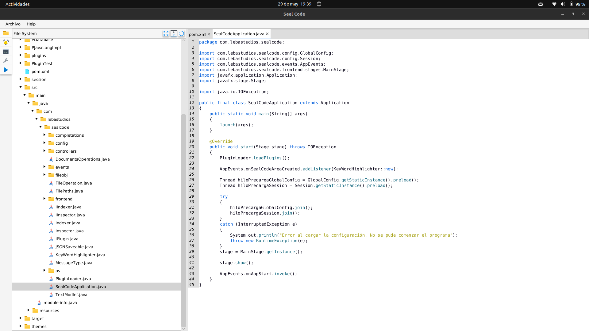
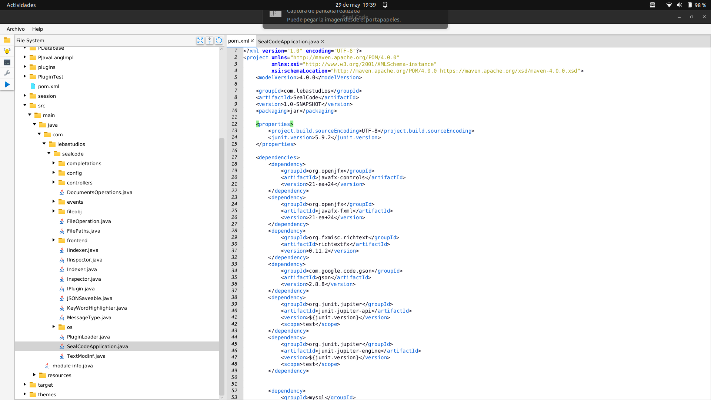
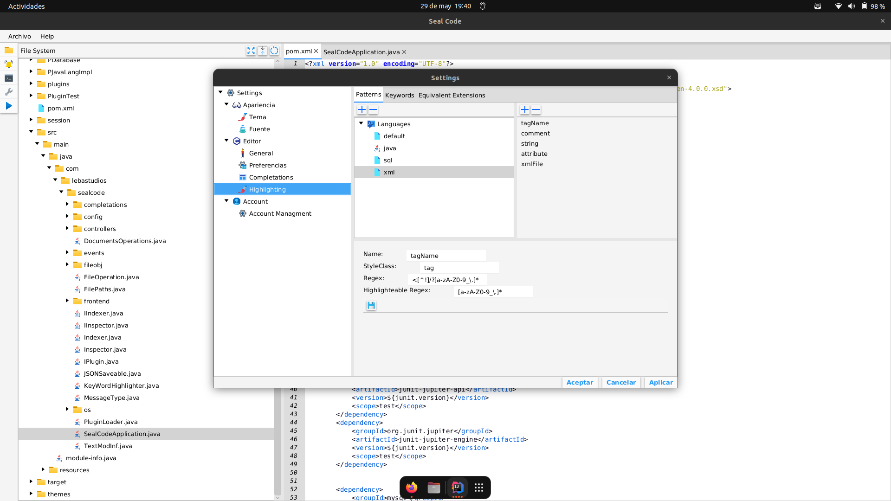
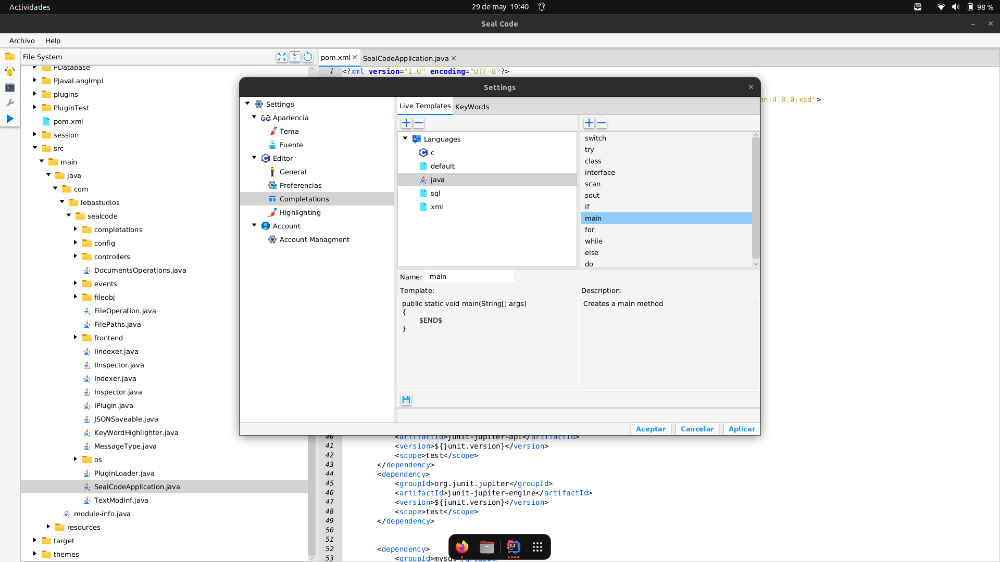

Multimedia




Tecnologías utilizadas
Java y Java FX
Equipo o Colaboradores
Borja Castellano
Fecha de creación
2024
Rol en el proyecto
Arquitectira y desarrollo
Editor de texto avanzado
Arquitectura Microkernel
Resaltado de sintaxis y autocompletado
Sincronización en la nube
Seal Code es un editor de texto avanzado que permite la creación de entornos personalizados . La idea principal del proyecto es la creción de un core potente que permita la facil implementación de 'plugins' que amplien sus funcionalidades. Además, sin necesidad de tener conocimientos de Java FX, cualquier usuario puede crear sus plantillas de autocompletado y resalto de sintaxis según la extensión de los ficheros abiertos.
El core de Seal Code se comunica mediante eventos con la lógica que el programador quiera implementar, permitiendo así personalizar cada aspecto del entorno de desarrollo que se busque crear. Este enfoque lo que busca es minimizar la necesidad de entender como funciona internamente el software facilitando así su implementación.
En el momento actual el IDE cuenta con un plugin simple orientado al desarrollo en Java de ejemplo que muestra las capacidades del core para implementar lo que el desarrollador desee. También cuenta, por defecto, con un plugin que permite la creacion de una cuenta de usuario que se usará para la sincronización de las configuraciones del editor en diferentes instancias del software.